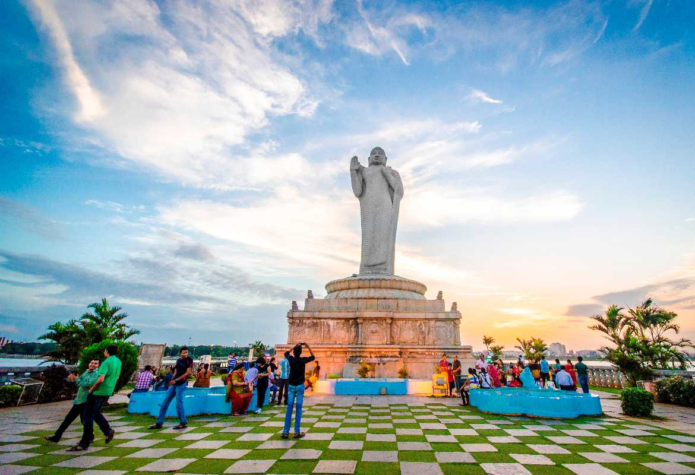

HUSSAIN SAGAR

Hussain Sagar (alternatively referred to as Tank Bund;[1] Telugu pronunciation: [ɦusen sɑːgər]) is a heart-shaped lake in Hyderabad, Telangana, built by Ibrahim Quli Qutb Shah in 1563.
It is spread across an area of 5.7 square kilometres (2.2 sq mi) and is fed by the River Musi.
A large monolithic statue of the Gautama Buddha, erected in 1992, stands on Gibraltar Rock in the middle of the lake. It also separates the city centre of Hyderabad from its neighborhood Secunderabad.
The maximum depth of the lake is 32 feet (9.8 m)
Hussain Sagar (alternatively referred to as Tank Bund;[1] Telugu pronunciation: [ɦusen sɑːgər]) is a heart-shaped lake in Hyderabad, Telangana, built by Ibrahim Quli Qutb Shah in 1563.
It is spread across an area of 5.7 square kilometres (2.2 sq mi) and is fed by the River Musi.
A large monolithic statue of the Gautama Buddha, erected in 1992, stands on Gibraltar Rock in the middle of the lake. It also separates the city centre of Hyderabad from its neighborhood Secunderabad.
The maximum depth of the lake is 32 feet (9.8 m)

How to reach:

By Air
The nearest airport is in hyderabad

By Train
The nearest railways is in hyderabad

By Road
hussainsagar , the most famous tourist destination in Hyderabad, can be used as a landmark. A bus,cab,local rickshaw can also be taken to reach the capital.